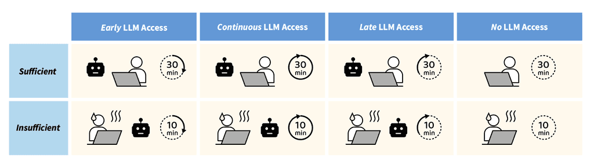
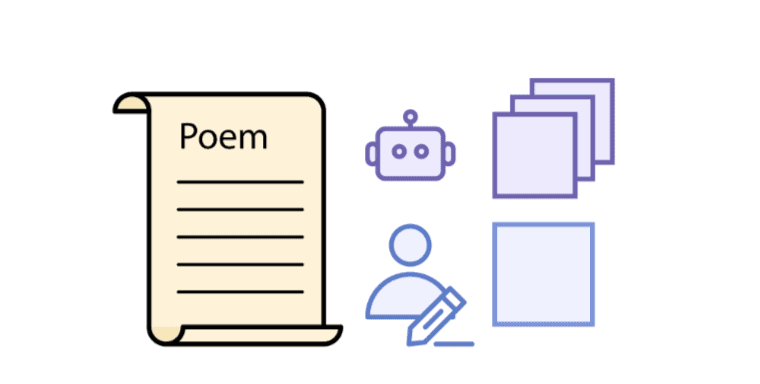
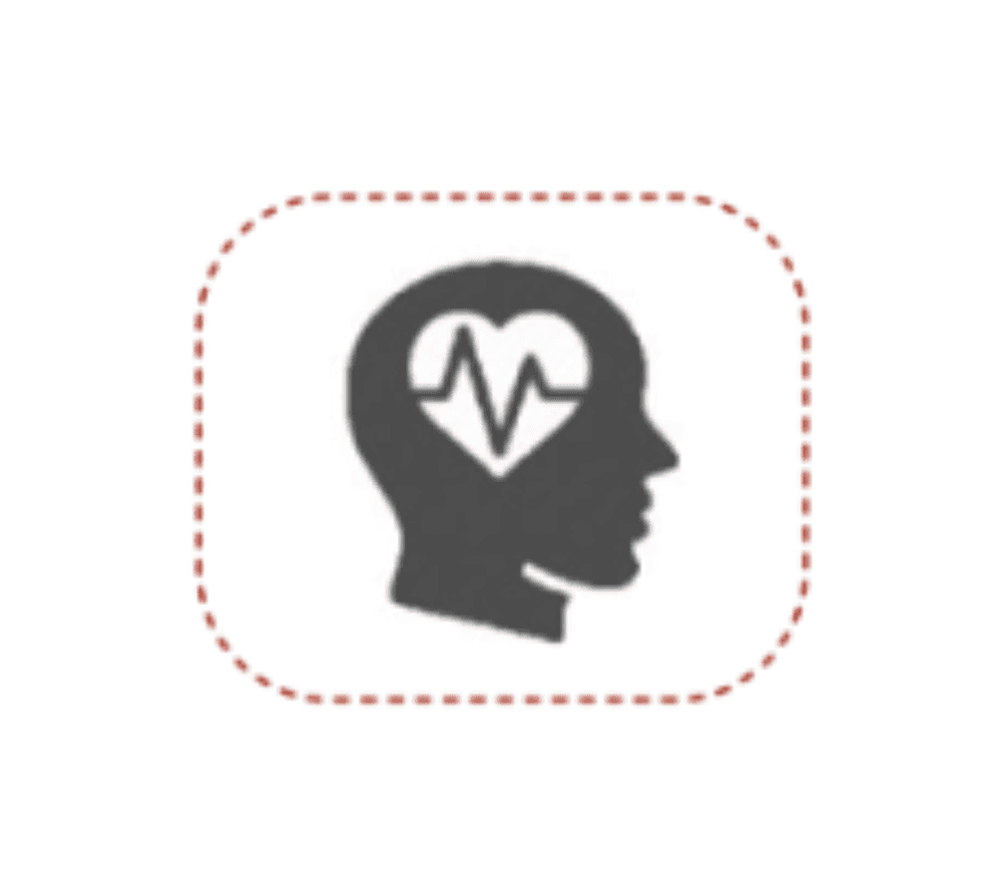
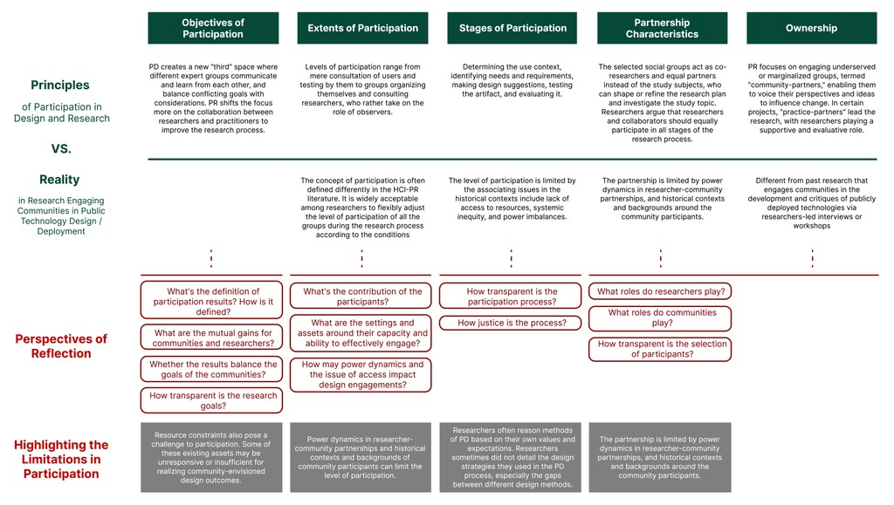
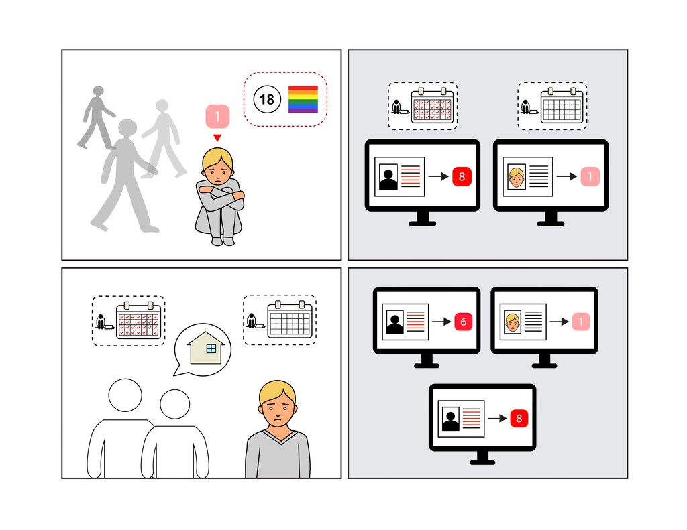
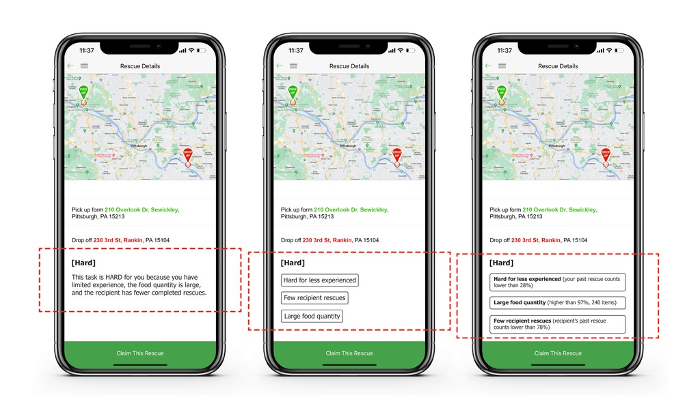

I am a CS PhD student at the University of Chicago, where I am fortunate to be advised by Mina Lee. Previously, I was a research associate at Carnegie Mellon University. Broadly, my research sits at the intersection of HCI, AI and CSS, exploring human-AI collaboration and evaluating human-AI systems.
My current research studies how AI changes people’s cognition, learning, and judgment (e.g., critical thinking).
- Concretely, I build AI systems by manipulating design choices (e.g., interaction, language, training), and evaluate how AI shapes the way people think in fundamental activities through which we engage with information (e.g., close reading, information seeking, writing), informing design that augments human capacities.
- In parallel, my research explores and practices better evaluation for AI systems as well as measurement of AI’s impact (e.g., cognitive pathways and outcomes).
NEWS
05/2026 Workshop“Broader Impacts of GenAI in Communication: Building Agendas for Research, Design, and Policymaking” accepted at CSCW 2026.
04/2026 MediaWork on AI’s impact on critical thinking featured in TIME.
04/2026 MediaWork on AI’s impact on critical thinking covered in Science News, and UChicago CS News.
04/2026 ConferencePresenting “Effects of AI Use on Critical Thinking Under Time Constraints: AI Access Timing and Time Availability” and “What Does AI Do for Cultural Interpretation? A Randomized Experiment on Close Reading Poems with Exposure to AI Interpretation” at CHI 2026.
02/2026 Paper“Combining Structured Tasks and Behavioral Logs for Measuring AI’s Impact on Cognition” featured at CHI 2026 Workshop on Tools for Thought.
01/2026 Paper“What Does AI Do for Cultural Interpretation? A Randomized Experiment on Close Reading Poems with Exposure to AI Interpretation” accepted at CHI 2026.
01/2026 Paper“Effects of AI Use on Critical Thinking Under Time Constraints: AI Access Timing and Time Availability” accepted at CHI 2026.
01/2026 Paper“Content Creation with Generative AI: How Do Content Creators Responsibly Use Generative AI Tools?” accepted at CSCW 2026.
07/2025 Workshop“The Work of AI Red Teaming: Automation and the Human Infrastructure” accepted at CSCW 2025.
01/2025 Paper“'You’re in a Ferrari. I’m Waiting for the Bus': Confronting Tensions in Community-University Partnerships for Publicly Deployed Technologies” accepted at CSCW 2025.
10/2024 Award“Investigating What Factors Influence Users’ Rating of Harmful Algorithmic Bias and Discrimination” received Best Paper Award at HCOMP 2024.
08/2024 Paper“Investigating What Factors Influence Users’ Rating of Harmful Algorithmic Bias and Discrimination” accepted at HCOMP 2024.
07/2024 Paper“PATIENT-Ψ: Using Large Language Models to Simulate Patients for Training Mental Health Professionals” accepted at EMNLP 2024.
03/2024 Paper“AI Failure Cards: Understanding and Supporting Grassroots Efforts to Mitigate AI Failures in Homeless Services” accepted at FAccT 2024.
02/2024 Paper“Predicting and Presenting Task Difficulty for Crowdsourcing Food Rescue Platforms” accepted at WWW 2024.
SELECTED WORKS




